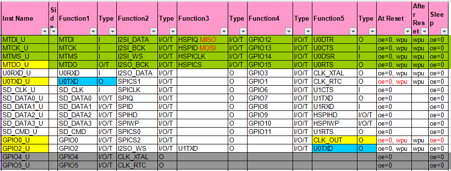
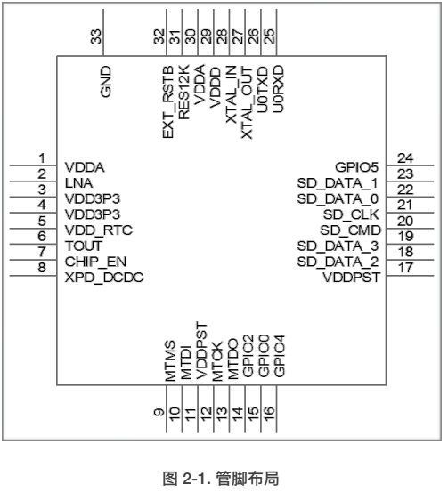
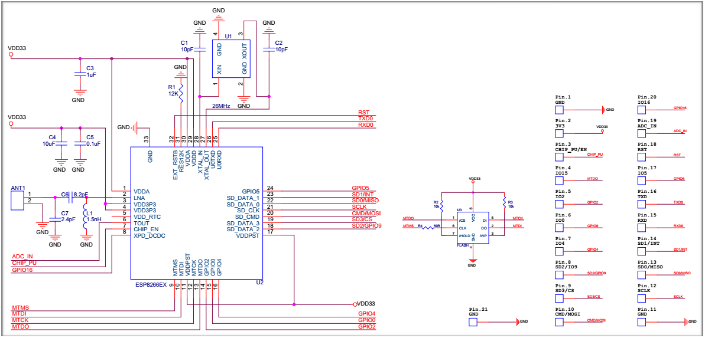

1、GPIP
(1):概述
ESP8266EX 共有 17 个 IO口，大部分都是功能复用接口，比如可以用作GPIO，有些可以用作UART、I2C等接口，当IO口用作GPIO时，可以配置内部上拉、下拉、高阻态。乐鑫官网给出了这么个表格，列出了IO的功能，如下图：

还有管脚布局图：

从上图可以看出ESP8266大部分IO口至少有2个功能，如15脚有三个功能，分别是GPI0、SPICS2、CLK_OUT,ESP8266 Datasheet有提到ESP8266有17个IO口，但是上面的表格只给出了16个，没给出GPIO16，是因为GPIO16比较特别，GPIO16（XPD_DCDC）不属于通用GPIO模块，属于RTC模块，可以用来在深度睡眠时唤醒整个芯片， 可以配置为输入输出，单无法触发IO中断。
ESP8266没有内部Flash，只能外挂Flash，这又要占用些管脚，所以能用做IO的管脚并没有17个，比如ESP官方的模块esp-wroom-s2，原理图如下：

从图中可以看出,MTDO(GPIO15)、MTCK(GPIO13)、MTDI（GPIO12)、MTMS(GPIO14)被Flash占用了，就不能用作GPIO了，
(2):NO OS SDK中GPIO操作相关函数
管脚上拉屏蔽:PIN_PULLUP_DIS(PIN_NAME)
管脚上拉使能:PIN_PULLUP_EN(PIN_NAME)
#define WRITE_PERI_REG(addr, val) (*((volatile uint32_t *)ETS_UNCACHED_ADDR(addr))) = (uint32_t)(val)从这宏的命名很容易知道这个是写外设寄存器的宏，上面的参数“PIN_NAME”就是传给这个宏的addr，也就是一个寄存器地址，结合这个SDK给出的例子，找到了给这个宏传的参数定义的地方，就是 头文件“Eagle_soc.h"中的"PIN Mux reg"部分，如下图：
如果要给GPIO5加上拉，写法是：
PIN_PULLUP_EN(PERIPHS_IO_MUX_GPIO5_U);
②：管脚功能选择：PIN_FUNC_SELECT(PIN_NAME, FUNC)
(2):GPIO用作输出